狐狸骑士 · 本轮美术接入
2026-10-01：本轮制作与正式场景替换完成。以下分别标注Godot实际运行截图与原生资源动画；制作记录、运行检查记录。已认可E狐狸、R3轻量像素UI及双刀型方案，最终观感留待你的实机确认。
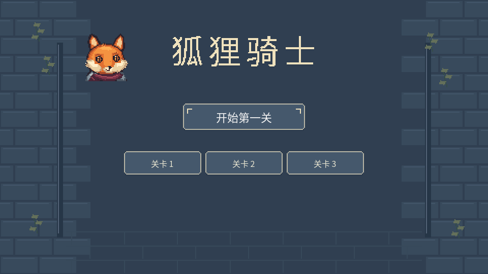
Godot实际菜单；正文保留可编辑中文，标题在原生网格排印。
头像原生4×检查
与游戏角色同身份的头像；此处为原生资源展示。
三关实际游戏画面
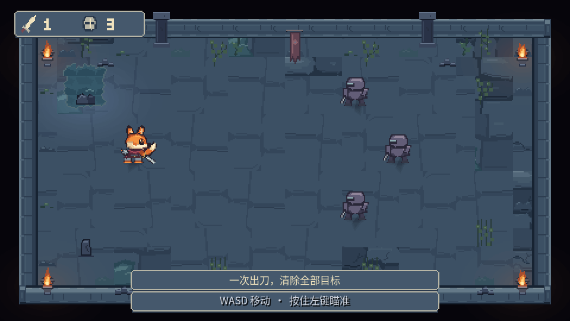
第一关：冷青湿庭，中央保持安静。
第二关：干燥灰紫庭院
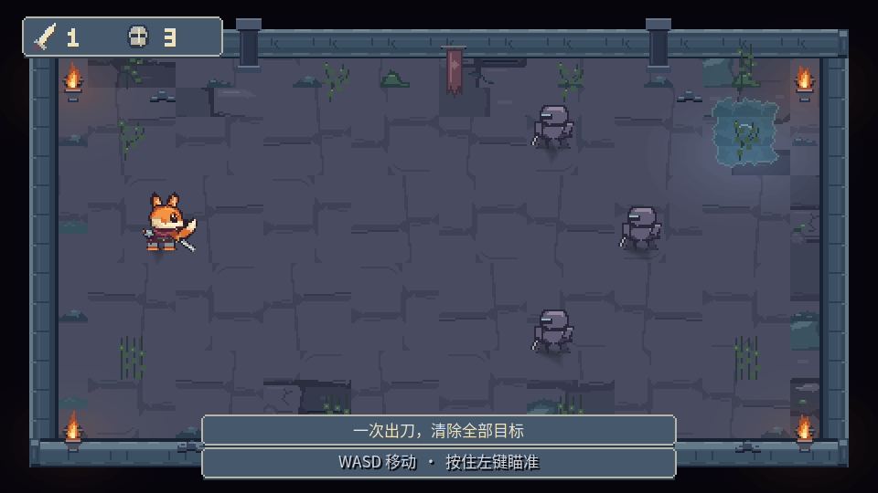
第三关：外围残损庭院
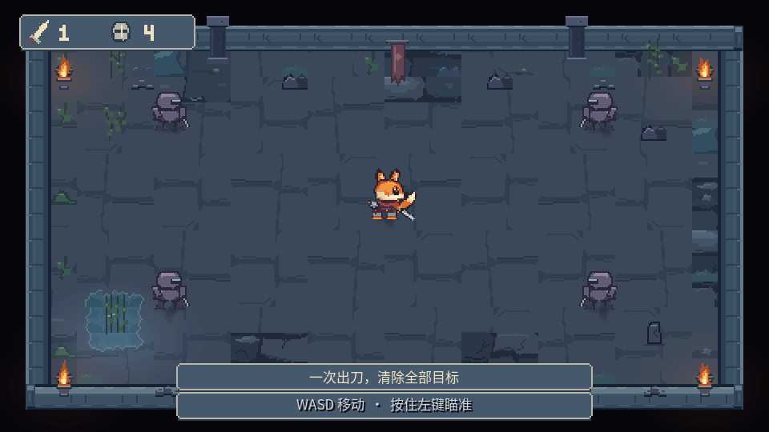
弧形斩与冲撞斩
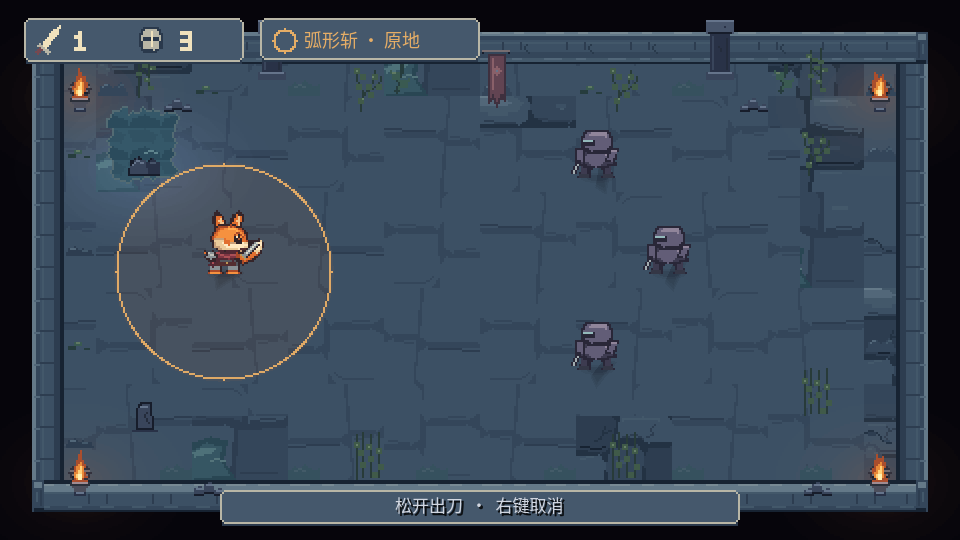
脚底为圆心，单个真实半径边界；刀型签说明原地斩。
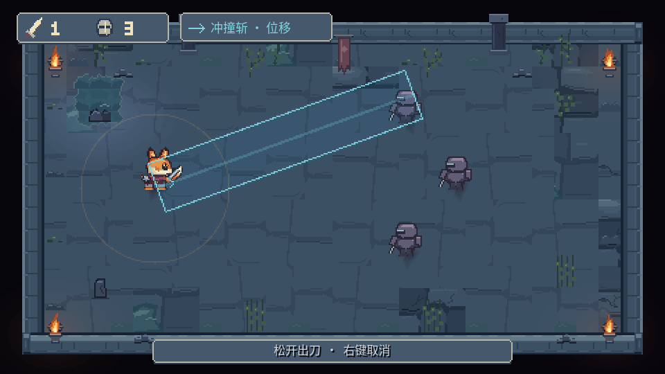
实际路径宽度与截断终点；弱暖圈提示回到近身刀型。
结算与幸存目标避让
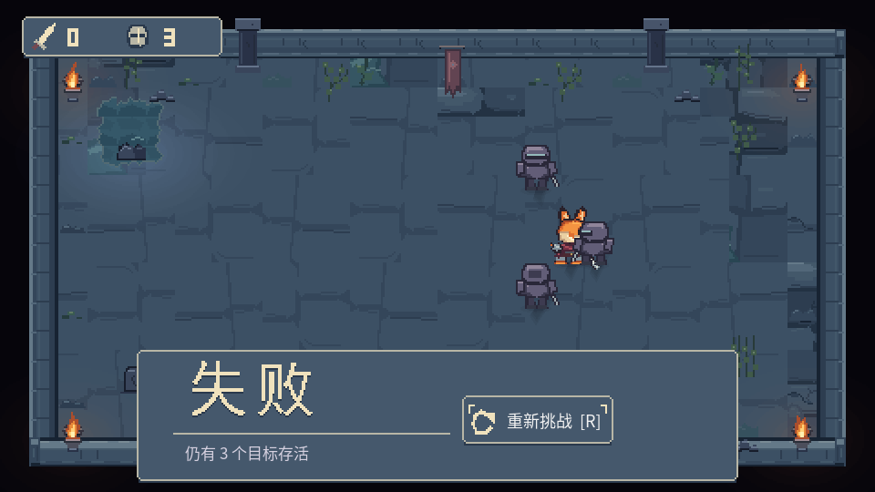
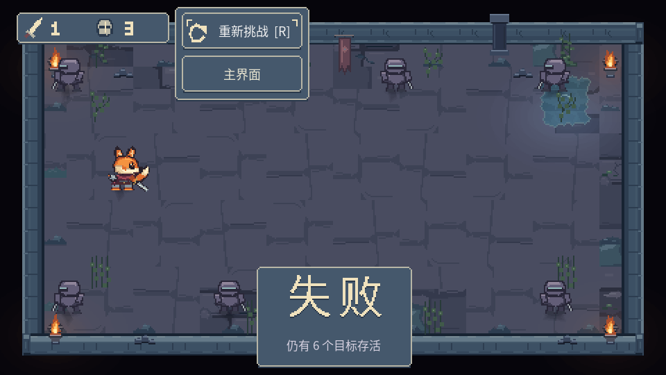
上下均有幸存者时，结果与操作分块寻找空位，实体及脚底保留8像素间距。角色原生逐帧动作
下列GIF播放交付图集的源帧；游戏内状态、位移、取消与真实命中另由运行检查验证。
角色帧清单 · UI原生组件接触表 · 刀光原生接触表
浅水、倒影与连续动作
连续序列由Godot真实输入移动录得，30帧、每帧约0.08秒；展示进入浅水、四向移动转向和离水。这里播放的是采样画面，完整动作帧源另见上方。
第1 / 30帧
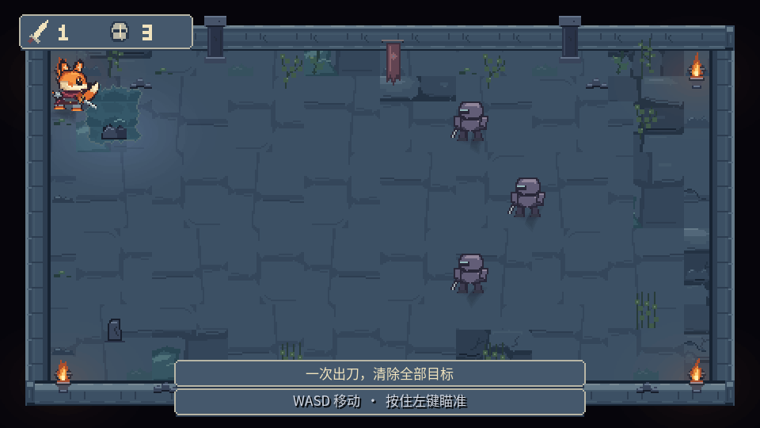
水中转向与离水静态对照
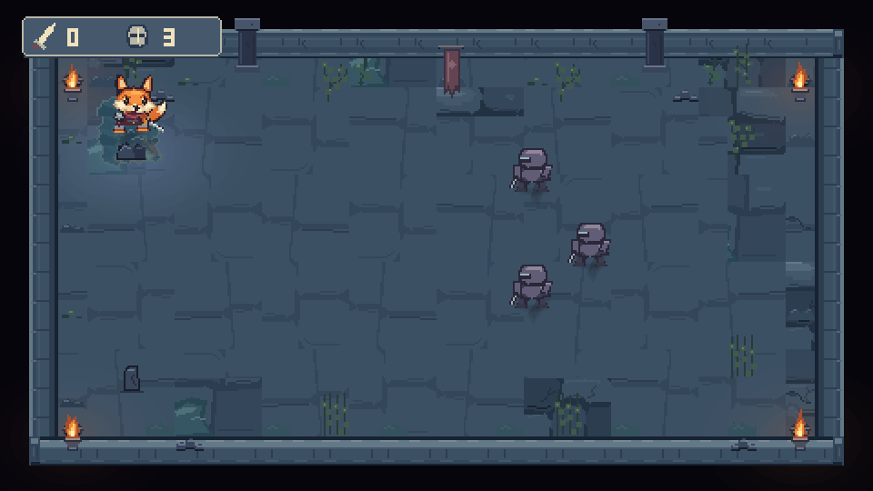
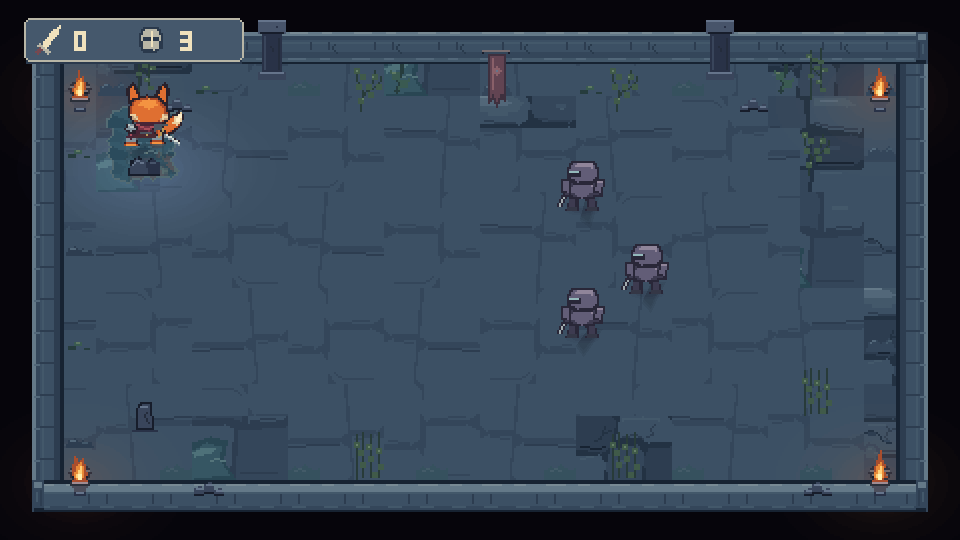
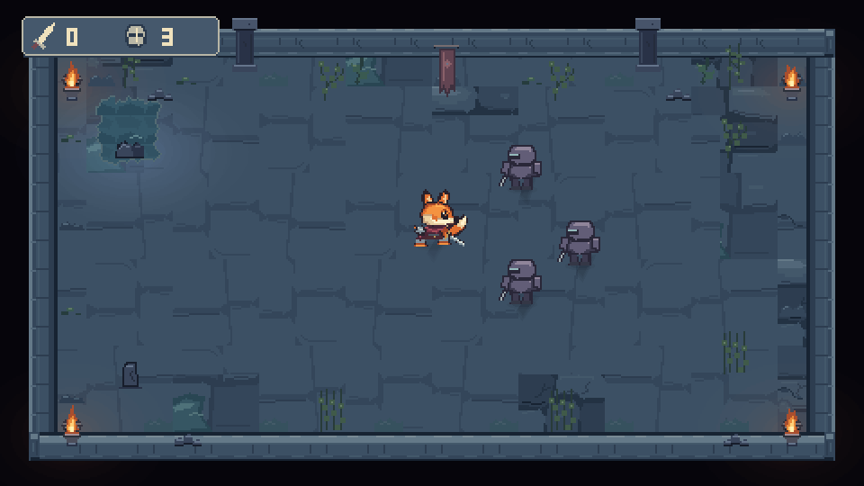
窗口尺寸对照
本轮制作基准960×540，现有窗口拉伸配置沿用。1920×1080可整数显示；1280×720与超宽对照用于说明当前适配结果，不把任何视野或留边取舍隐含进资源替换。
1280×720 · 1920×1080 · 超宽窗口
当前可见限制：近身角色重叠时，士兵可能遮住狐狸部分脸和握剑手。功能与素材检查通过不等于最终审美签收。